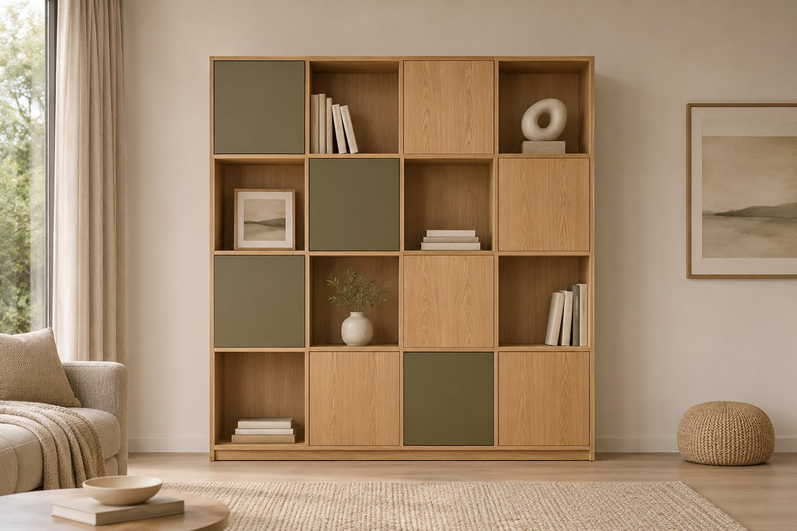

Система хранения «Куб»
Квадратные секции для гостиной

Квадратные ниши подходят для книг, коллекций и коробок. Сочетание открытых и закрытых секций позволяет оставить часть вещей на виду. Высоту композиции и размещение дверец можно адаптировать под стену и привычки хранения.
Характеристики
- Конфигурация
- Квадратные секции для гостиной
- Размещение
- Вдоль стены гостиной
- Секции
- Квадратные открытые ниши и секции с дверцами
- Назначение
- Книги, коробки, декор и домашние мелочи
Возможные материалы
- ЛДСП с древесной фактурой
- Матовые оливковые фасады из МДФ или ЛДСП
- Скрытые петли для закрытых секций
Преимущества
- Регулярная сетка упрощает организацию хранения
- Закрытые секции уменьшают визуальную нагрузку